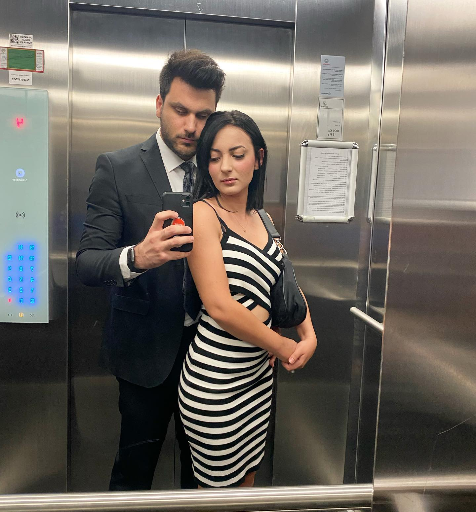
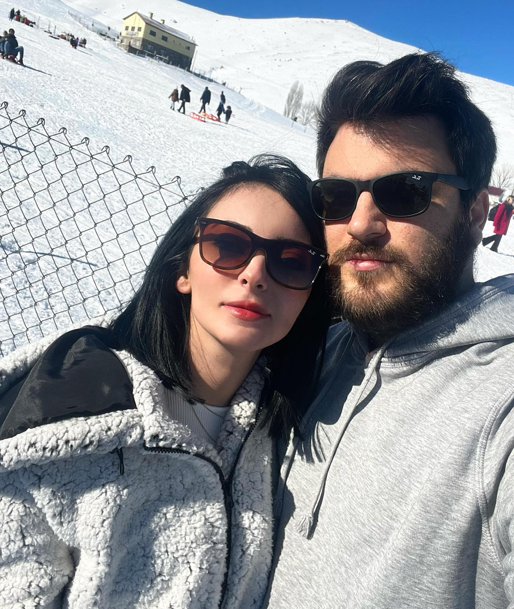
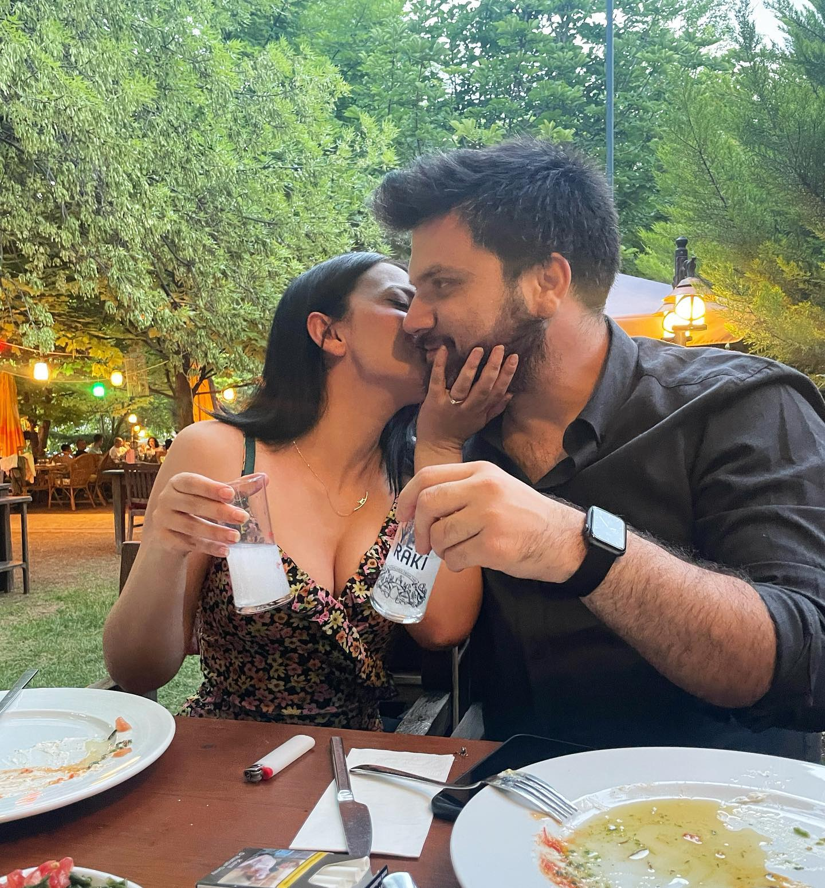
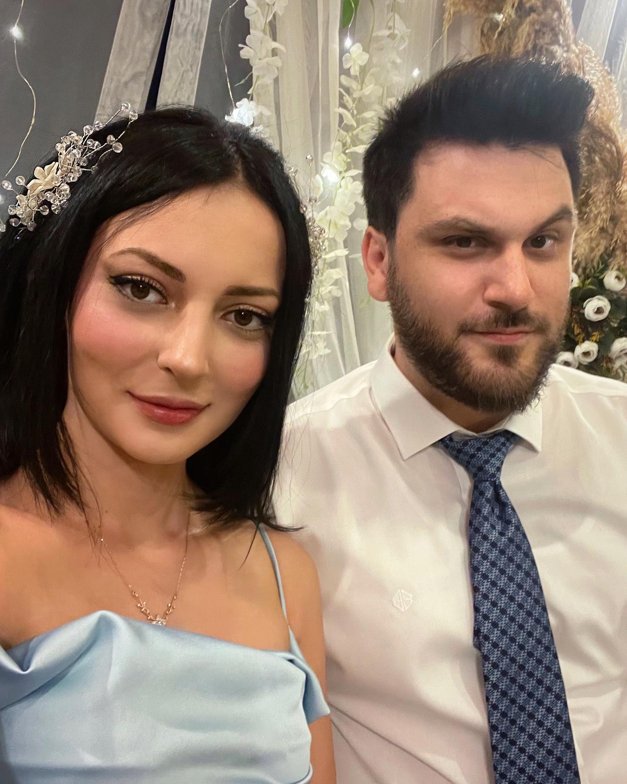
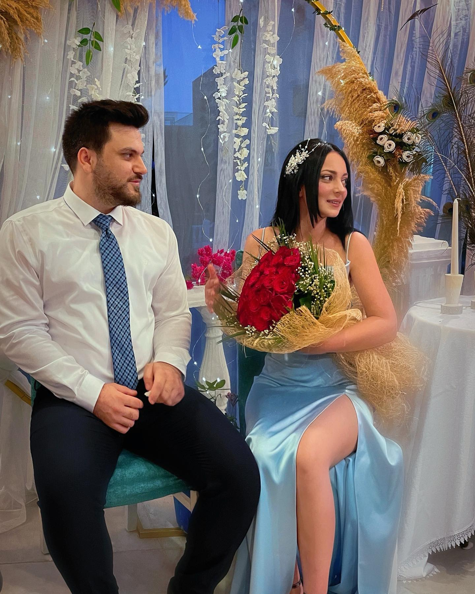
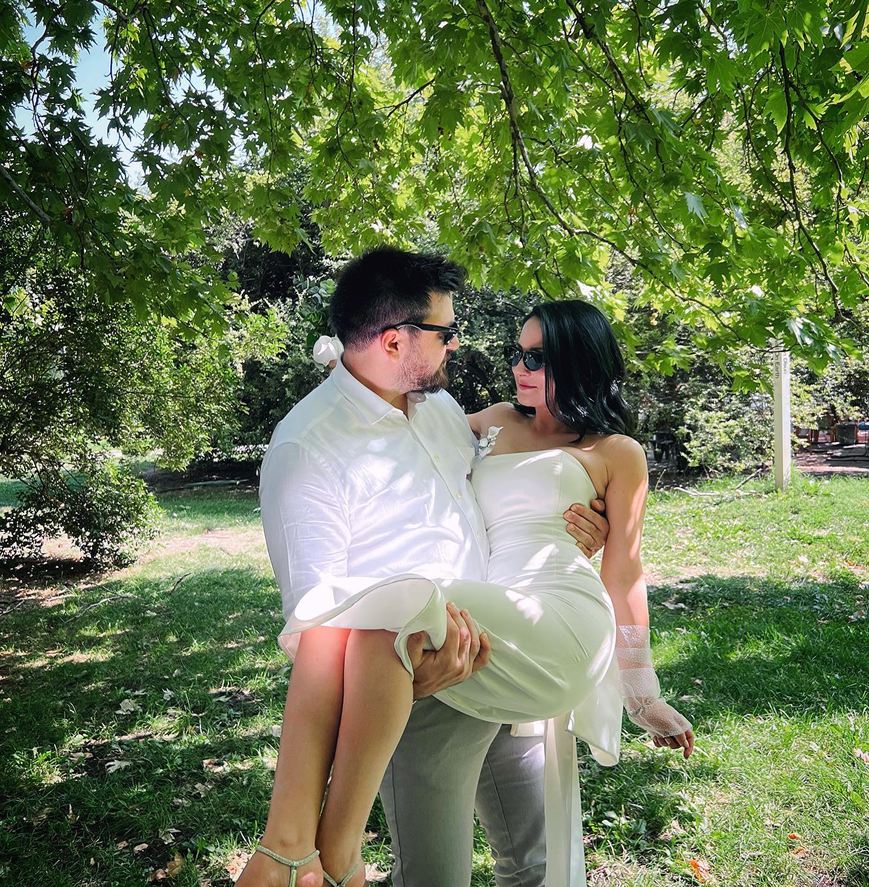

Tahir olmak da ayıp değil Zühre olmak da,
hattâ sevda yüzünden ölmek de ayıp değil;
bütün iş Tahirle Zühre olabilmekte,
yani yürekte.
Nazım Hikmet

Aklımdan çıkmıyor. Aklım çıkıyor, o çıkmıyor.
Oğuz Atay

Baktım gülüşünden güzel şiir olur, ben de sevdim gitti.
Cemal Süreya

Ben hiç böylesini görmemiştim, vurdun kanıma girdin kabulümsün.
Atilla İlhan

Ve sen geçersin içimden. Bitmek bilmezsin.
Ahmet Arif
Çünkü hayat, birinin tüm kalbiyle senin yanında olduğunu bildiğinde güzelleşiyor.
Can Yücel

O gece gördüm, onun gözlerinde gördüm; Gün ne güzel doğarmış meğer açık denizlerde!
Orhan Veli